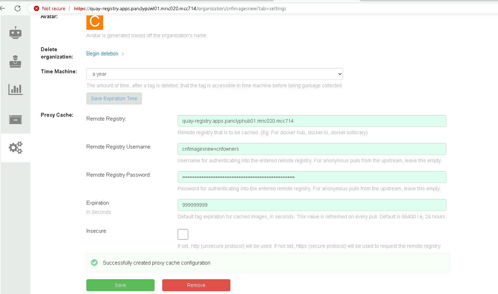
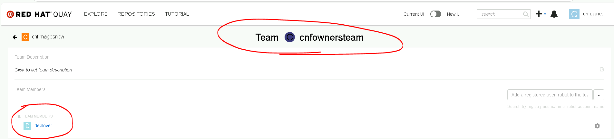
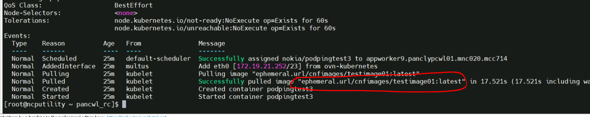

Proxy-cache quay based pod creation
proxy-cache TLS issue.
- Login in to CWL cluster and make sure mcp and nodes are looks good at this point, if any issue, need to be resolved first.
[root@ncputility ~ pancwl_rc]$ oc get nodes
NAME STATUS ROLES AGE VERSION
appworker0.panclypcwl01.mnc020.mcc714 Ready appworker,appworker-mcp-a,worker 38d v1.29.6+aba1e8d
appworker1.panclypcwl01.mnc020.mcc714 Ready appworker,appworker-mcp-a,worker 38d v1.29.6+aba1e8d
appworker10.panclypcwl01.mnc020.mcc714 Ready appworker,appworker-mcp-b,worker 37d v1.29.6+aba1e8d
appworker11.panclypcwl01.mnc020.mcc714 Ready appworker,appworker-mcp-b,worker 37d v1.29.6+aba1e8d
appworker12.panclypcwl01.mnc020.mcc714 Ready appworker,appworker-mcp-b,worker 37d v1.29.6+aba1e8d
appworker13.panclypcwl01.mnc020.mcc714 Ready appworker,appworker-mcp-b,worker 37d v1.29.6+aba1e8d
appworker14.panclypcwl01.mnc020.mcc714 Ready appworker,appworker-mcp-b,worker 37d v1.29.6+aba1e8d
appworker15.panclypcwl01.mnc020.mcc714 Ready appworker,appworker-mcp-b,worker 37d v1.29.6+aba1e8d
appworker16.panclypcwl01.mnc020.mcc714 Ready appworker,appworker-mcp-b,worker 37d v1.29.6+aba1e8d
appworker17.panclypcwl01.mnc020.mcc714 Ready appworker,appworker-mcp-b,worker 37d v1.29.6+aba1e8d
appworker19.panclypcwl01.mnc020.mcc714 Ready appworker,appworker-mcp-c,worker 37d v1.29.6+aba1e8d
appworker2.panclypcwl01.mnc020.mcc714 Ready appworker,appworker-mcp-a,worker 30d v1.29.6+aba1e8d
appworker20.panclypcwl01.mnc020.mcc714 Ready appworker,appworker-mcp-c,worker 37d v1.29.6+aba1e8d
appworker21.panclypcwl01.mnc020.mcc714 Ready appworker,appworker-mcp-c,worker 37d v1.29.6+aba1e8d
appworker22.panclypcwl01.mnc020.mcc714 Ready appworker,appworker-mcp-c,worker 37d v1.29.6+aba1e8d
appworker23.panclypcwl01.mnc020.mcc714 Ready appworker,appworker-mcp-c,worker 37d v1.29.6+aba1e8d
appworker24.panclypcwl01.mnc020.mcc714 Ready appworker,appworker-mcp-c,worker 37d v1.29.6+aba1e8d
appworker25.panclypcwl01.mnc020.mcc714 Ready appworker,appworker-mcp-c,worker 37d v1.29.6+aba1e8d
appworker26.panclypcwl01.mnc020.mcc714 Ready appworker,appworker-mcp-c,worker 37d v1.29.6+aba1e8d
appworker27.panclypcwl01.mnc020.mcc714 Ready appworker,appworker-mcp-d,worker 37d v1.29.6+aba1e8d
appworker28.panclypcwl01.mnc020.mcc714 Ready appworker,appworker-mcp-d,worker 37d v1.29.6+aba1e8d
appworker29.panclypcwl01.mnc020.mcc714 Ready appworker,appworker-mcp-d,worker 37d v1.29.6+aba1e8d
appworker3.panclypcwl01.mnc020.mcc714 Ready appworker,appworker-mcp-a,worker 38d v1.29.6+aba1e8d
appworker30.panclypcwl01.mnc020.mcc714 Ready appworker,appworker-mcp-d,worker 37d v1.29.6+aba1e8d
appworker31.panclypcwl01.mnc020.mcc714 Ready appworker,appworker-mcp-d,worker 37d v1.29.6+aba1e8d
appworker32.panclypcwl01.mnc020.mcc714 Ready appworker,appworker-mcp-d,worker 37d v1.29.6+aba1e8d
appworker33.panclypcwl01.mnc020.mcc714 Ready appworker,appworker-mcp-d,worker 37d v1.29.6+aba1e8d
appworker34.panclypcwl01.mnc020.mcc714 Ready appworker,appworker-mcp-d,worker 37d v1.29.6+aba1e8d
appworker4.panclypcwl01.mnc020.mcc714 Ready appworker,appworker-mcp-a,worker 38d v1.29.6+aba1e8d
appworker5.panclypcwl01.mnc020.mcc714 Ready appworker,appworker-mcp-a,worker 38d v1.29.6+aba1e8d
appworker6.panclypcwl01.mnc020.mcc714 Ready appworker,appworker-mcp-a,worker 38d v1.29.6+aba1e8d
appworker7.panclypcwl01.mnc020.mcc714 Ready appworker,appworker-mcp-a,worker 37d v1.29.6+aba1e8d
appworker9.panclypcwl01.mnc020.mcc714 Ready appworker,appworker-mcp-b,worker 37d v1.29.6+aba1e8d
gateway1.panclypcwl01.mnc020.mcc714 Ready gateway,gateway-mcp-a,worker 38d v1.29.6+aba1e8d
gateway2.panclypcwl01.mnc020.mcc714 Ready gateway,gateway-mcp-a,worker 38d v1.29.6+aba1e8d
gateway3.panclypcwl01.mnc020.mcc714 Ready gateway,gateway-mcp-b,worker 38d v1.29.6+aba1e8d
gateway4.panclypcwl01.mnc020.mcc714 Ready gateway,gateway-mcp-b,worker 38d v1.29.6+aba1e8d
master0.panclypcwl01.mnc020.mcc714 Ready control-plane,master,monitor 38d v1.29.6+aba1e8d
master1.panclypcwl01.mnc020.mcc714 Ready control-plane,master,monitor 38d v1.29.6+aba1e8d
master2.panclypcwl01.mnc020.mcc714 Ready control-plane,master,monitor 38d v1.29.6+aba1e8d
storage0.panclypcwl01.mnc020.mcc714 Ready storage,worker 38d v1.29.6+aba1e8d
storage1.panclypcwl01.mnc020.mcc714 Ready storage,worker 38d v1.29.6+aba1e8d
storage2.panclypcwl01.mnc020.mcc714 Ready storage,worker 38d v1.29.6+aba1e8d
storage3.panclypcwl01.mnc020.mcc714 Ready storage,worker 38d v1.29.6+aba1e8d
storage4.panclypcwl01.mnc020.mcc714 Ready storage,worker 38d v1.29.6+aba1e8d
[root@ncputility ~ pancwl_rc]$ oc get mcp
NAME CONFIG UPDATED UPDATING DEGRADED MACHINECOUNT READYMACHINECOUNT UPDATEDMACHINECOUNT DEGRADEDMACHINECOUNT AGE
appworker-mcp-a rendered-appworker-mcp-a-0e9dd6df593dcd5016bbe7d601119bf4 True False False 8 8 8 0 37d
appworker-mcp-b rendered-appworker-mcp-b-0e9dd6df593dcd5016bbe7d601119bf4 True False False 9 9 9 0 37d
appworker-mcp-c rendered-appworker-mcp-c-5afb864664d3b10530b54b3153a1a61e True False False 8 8 8 0 29h
appworker-mcp-d rendered-appworker-mcp-d-5afb864664d3b10530b54b3153a1a61e True False False 8 8 8 0 29h
gateway-mcp-a rendered-gateway-mcp-a-c81254a16575de9053ae543c4f1ba3fb True False False 2 2 2 0 37d
gateway-mcp-b rendered-gateway-mcp-b-3be41ecbbe09004c35ca04a4309cabf0 True False False 2 2 2 0 29h
master rendered-master-114f60e6be691323222ea11e72de0bcf True False False 3 3 3 0 38d
storage rendered-storage-dc2d8a34080bce1400e11bb1fb098693 True False False 5 5 5 0 37d
worker rendered-worker-68cb1df39185f7ad80fda7915e4c5a42 True False False 0 0 0 0 38d
[root@ncputility ~ pancwl_rc]$
- login to hub cluster and run this command
[root@ncputility ~ pancwl_rc]$ source /root/panhubrc
WARNING: Using insecure TLS client config. Setting this option is not supported!
Login successful.
You have access to 105 projects, the list has been suppressed. You can list all projects with 'oc projects'
Using project "default".
[root@ncputility ~ panhub_rc]$ oc get secret -n openshift-ingress-operator router-ca -o "jsonpath={.data['tls\.crt']}" | base64 -d
-----BEGIN CERTIFICATE-----
MIIDDDCCAfSgAwIBAgIBATANBgkqhkiG9w0BAQsFADAmMSQwIgYDVQQDDBtpbmdy
ZXNzLW9wZXJhdG9yQDE3NDAwNzQ1NDQwHhcNMjUwMjIwMTgwMjIzWhcNMjcwMjIw
MTgwMjI0WjAmMSQwIgYDVQQDDBtpbmdyZXNzLW9wZXJhdG9yQDE3NDAwNzQ1NDQw
ggEiMA0GCSqGSIb3DQEBAQUAA4IBDwAwggEKAoIBAQDjXWFSVPshwihivZhaTrB7
0boUOw2j3Ut/J6eSm+JA+xVl05L4XD8+C8VSst+f32Pe42Lso2hrovY1dT7IBX3g
6S9Nnd2iRc9vC/qHcQkGQ6krIYSQ48aCH7UuahCpTqxEp+MwmhCTQngN2maTJBe3
0E6K2IL4zXSi0Iuj08BOnH/w4pJxeWhyngXDf2SeA88EmU3juHLshHrAND84uou2
/sOStIAhFwU+o887dSgx7iERy+6nczSDB9Qvq11cUSS4RPC82bNnxcc+BrynDwZ/
eggs0OEaj/1cHu/svKZHX9gUKrqz80wF8YGZLLgI2oPAf2VJorvtkJAErzgttroF
AgMBAAGjRTBDMA4GA1UdDwEB/wQEAwICpDASBgNVHRMBAf8ECDAGAQH/AgEAMB0G
A1UdDgQWBBTZS/SzkBfiHQ5/Gy+b4g1XJOHkojANBgkqhkiG9w0BAQsFAAOCAQEA
UwPhAbzTWZIlBsMHAL+8jvxM8qxc6HDhayAD4gbCE65vHYgSizost02vRfpOPQq1
D6HM8JjifS3KHd6E6chdTbrHI0W8pMJJPon5akCJf/uGeGDl+2wKfmVC6UoV7hC3
pcUzm3JKwsNJbjS5rxL8f5a8bNdIFfLQKuyRpnVX2CsNHvh+WJzynQ+PUJ6zCa7y
x5AJxca2PTnBKRoVTAyumT1suluI9f4GRYnxTE/qIKRZRs+uT3kIl/N9VX+GbjGb
pPszJ+p6N6Arl1BqJP1DdLin2IFGZL39pTyifm5GP+Vou2aHPuHZDVoCdxsFKup+
gUY2KeKz0UManwubPQNnKA==
-----END CERTIFICATE-----
[root@ncputility ~ panhub_rc]$
- login to workload cluster and run this command
[root@ncputility ~ pancwl_rc]$ source /root/pancwlrc
WARNING: Using insecure TLS client config. Setting this option is not supported!
Login successful.
You have access to 115 projects, the list has been suppressed. You can list all projects with 'oc projects'
Using project "nokia".
[root@ncputility ~ pancwl_rc]$ oc get cm -n openshift-config user-ca-bundle -o yaml
apiVersion: v1
data:
ca-bundle.crt: |
-----BEGIN CERTIFICATE-----
MIIDDDCCAfSgAwIBAgIBATANBgkqhkiG9w0BAQsFADAmMSQwIgYDVQQDDBtpbmdy
ZXNzLW9wZXJhdG9yQDE3NDAwNzQ1NDQwHhcNMjUwMjIwMTgwMjIzWhcNMjcwMjIw
MTgwMjI0WjAmMSQwIgYDVQQDDBtpbmdyZXNzLW9wZXJhdG9yQDE3NDAwNzQ1NDQw
ggEiMA0GCSqGSIb3DQEBAQUAA4IBDwAwggEKAoIBAQDjXWFSVPshwihivZhaTrB7
0boUOw2j3Ut/J6eSm+JA+xVl05L4XD8+C8VSst+f32Pe42Lso2hrovY1dT7IBX3g
6S9Nnd2iRc9vC/qHcQkGQ6krIYSQ48aCH7UuahCpTqxEp+MwmhCTQngN2maTJBe3
0E6K2IL4zXSi0Iuj08BOnH/w4pJxeWhyngXDf2SeA88EmU3juHLshHrAND84uou2
/sOStIAhFwU+o887dSgx7iERy+6nczSDB9Qvq11cUSS4RPC82bNnxcc+BrynDwZ/
eggs0OEaj/1cHu/svKZHX9gUKrqz80wF8YGZLLgI2oPAf2VJorvtkJAErzgttroF
AgMBAAGjRTBDMA4GA1UdDwEB/wQEAwICpDASBgNVHRMBAf8ECDAGAQH/AgEAMB0G
A1UdDgQWBBTZS/SzkBfiHQ5/Gy+b4g1XJOHkojANBgkqhkiG9w0BAQsFAAOCAQEA
UwPhAbzTWZIlBsMHAL+8jvxM8qxc6HDhayAD4gbCE65vHYgSizost02vRfpOPQq1
D6HM8JjifS3KHd6E6chdTbrHI0W8pMJJPon5akCJf/uGeGDl+2wKfmVC6UoV7hC3
pcUzm3JKwsNJbjS5rxL8f5a8bNdIFfLQKuyRpnVX2CsNHvh+WJzynQ+PUJ6zCa7y
x5AJxca2PTnBKRoVTAyumT1suluI9f4GRYnxTE/qIKRZRs+uT3kIl/N9VX+GbjGb
pPszJ+p6N6Arl1BqJP1DdLin2IFGZL39pTyifm5GP+Vou2aHPuHZDVoCdxsFKup+
gUY2KeKz0UManwubPQNnKA==
-----END CERTIFICATE-----
kind: ConfigMap
metadata:
annotations:
openshift.io/owning-component: End User
creationTimestamp: "2025-03-03T08:56:26Z"
name: user-ca-bundle
namespace: openshift-config
resourceVersion: "43318895"
uid: 6624e5ad-93b5-418e-8c1e-7a91c724a760
[root@ncputility ~ pancwl_rc]$ oc get proxy cluster -o yaml
apiVersion: config.openshift.io/v1
kind: Proxy
metadata:
creationTimestamp: "2025-03-03T08:54:59Z"
generation: 2
name: cluster
resourceVersion: "48312416"
uid: ceaebe02-9bd3-4361-847e-1b880ebb85de
spec:
trustedCA:
name: user-ca-bundle <---------------------------- this should be patched. if missing.
status: {}
[root@ncputility ~ pancwl_rc]$
- login to workload cluster add tls of hub to cwl.
[root@ncputility ~ pancwl_rc]$ oc patch proxy cluster --patch '{"spec":{"trustedCA":{"name":"user-ca-bundle"}}}' --type=merge
[root@ncputility ~ pancwl_rc]$ oc get proxy cluster -o yaml
apiVersion: config.openshift.io/v1
kind: Proxy
metadata:
creationTimestamp: "2025-03-03T08:54:59Z"
generation: 2
name: cluster
resourceVersion: "48312416"
uid: ceaebe02-9bd3-4361-847e-1b880ebb85de
spec:
trustedCA:
name: user-ca-bundle
status: {}
[root@ncputility ~ pancwl_rc]$
Configure the proxy cache on the registry level.
hub quay configiration
- Open up the hub quay url
CWL quay configuration
- Open CWL quay login via super account and created an user called cnfowners also fix the passwd.

- Create an org as same as hub quay.

- Set the proxy cache configuration for the organization

- create robot account and default permission

- Create a new team for image pull user

- Set default permission for the pull user (optional)
- Extend the global image pull secret
During the Managed cluster installation, the global pull secret is configured. If the 2nd Hub Quay account and the cache account are not prepared in advance, these accounts need to be added. In case of mirrored registries, only the global pull secret can be used. It is not possible to add project specific pull secrets. For more information, see chapter Image configuration resources in document Images, available in OpenShift Container Platform Product documentation.
Testing pod creation using proxy-cache quay.
- Login the namespace with cluster admin access to grand rights for an scc.
[root@ncputility ~ pancwl_rc]$ source /root/pancwlrc
WARNING: Using insecure TLS client config. Setting this option is not supported!
Login successful.
You have access to 116 projects, the list has been suppressed. You can list all projects with 'oc projects'
Using project "default".
[root@ncputility ~ pancwl_rc]$
- Grand admin rights to project. if missed during project creation phase.
[root@ncputility ~ pancwl_rc]$ oc policy add-role-to-user admin nokia -n nokia
clusterrole.rbac.authorization.k8s.io/admin added: "nokia"
[root@ncputility ~ pancwl_rc]$
- Also grand scc role to default service account via anyuid.
[root@ncputility ~ pancwl_rc]$ oc adm policy add-scc-to-user anyuid -z default -n nokia
clusterrole.rbac.authorization.k8s.io/system:openshift:scc:anyuid added: "default"
[root@ncputility ~ pancwl_rc]$
- login to cnf tenant here .
[root@ncputility ~ pancwl_rc]$ oc login -u nokia -p nokia@123
WARNING: Using insecure TLS client config. Setting this option is not supported!
Login successful.
You have one project on this server: "nokia"
Using project "nokia".
[root@ncputility ~ pancwl_rc]$
- run an pod using proxy-cache url
[root@ncputility ~ pancwl_rc]$ oc run podpingtest3 --image=ephemeral.url/cnfimages/testimage01:latest --restart=Never -- tail -f /dev/null
pod/podpingtest3 created
[root@ncputility ~ pancwl_rc]$ oc get pods
NAME READY STATUS RESTARTS AGE
podpingtest3 0/1 ContainerCreating 0 4s
[root@ncputility ~ pancwl_rc]$ oc get pods
NAME READY STATUS RESTARTS AGE
podpingtest3 0/1 ContainerCreating 0 6s
[root@ncputility ~ pancwl_rc]$ oc get pods
NAME READY STATUS RESTARTS AGE
podpingtest3 0/1 ContainerCreating 0 8s
[root@ncputility ~ pancwl_rc]$ oc get pods
NAME READY STATUS RESTARTS AGE
podpingtest3 0/1 ContainerCreating 0 9s
[root@ncputility ~ pancwl_rc]$ oc get pods
NAME READY STATUS RESTARTS AGE
podpingtest3 0/1 ContainerCreating 0 11s
[root@ncputility ~ pancwl_rc]$ oc get pods
NAME READY STATUS RESTARTS AGE
podpingtest3 0/1 ContainerCreating 0 13s
[root@ncputility ~ pancwl_rc]$
- validate the pod status and make sure it's getting the image via proxy-cache.
[root@ncputility ~ pancwl_rc]$ oc get pods
NAME READY STATUS RESTARTS AGE
podpingtest3 1/1 Running 0 5m1s
[root@ncputility ~ pancwl_rc]$
[root@ncputility ~ pancwl_rc]$ oc describe pod podpingtest3
Name: podpingtest3
Namespace: nokia
Priority: 0
Service Account: default
Node: appworker9.panclypcwl01.mnc020.mcc714/10.89.96.35
Start Time: Fri, 04 Apr 2025 08:04:47 -0500
Labels: run=podpingtest3
Annotations: k8s.ovn.org/pod-networks:
{"default":{"ip_addresses":["172.19.21.252/23"],"mac_address":"0a:58:ac:13:15:fc","gateway_ips":["172.19.20.1"],"routes":[{"dest":"172.16....
k8s.v1.cni.cncf.io/network-status:
[{
"name": "ovn-kubernetes",
"interface": "eth0",
"ips": [
"172.19.21.252"
],
"mac": "0a:58:ac:13:15:fc",
"default": true,
"dns": {}
}]
openshift.io/scc: anyuid
Status: Running
IP: 172.19.21.252
IPs:
IP: 172.19.21.252
Containers:
podpingtest3:
Container ID: cri-o://749055ef608c6f30be42248c63889fd85377928389dae2e29eed50919cc2ee79
Image: ephemeral.url/cnfimages/testimage01:latest
Image ID: ephemeral.url/cnfimages/testimage01@sha256:32666e0234f88377a91de56bb78f2d4f8df45b4f99c1c2dc9ee1d134c84f4753
Port: <none>
Host Port: <none>
Args:
tail
-f
/dev/null
State: Running
Started: Fri, 04 Apr 2025 08:05:05 -0500
Ready: True
Restart Count: 0
Environment: <none>
Mounts:
/var/run/secrets/kubernetes.io/serviceaccount from kube-api-access-mp46w (ro)
Conditions:
Type Status
PodReadyToStartContainers True
Initialized True
Ready True
ContainersReady True
PodScheduled True
Volumes:
kube-api-access-mp46w:
Type: Projected (a volume that contains injected data from multiple sources)
TokenExpirationSeconds: 3607
ConfigMapName: kube-root-ca.crt
ConfigMapOptional: <nil>
DownwardAPI: true
ConfigMapName: openshift-service-ca.crt
ConfigMapOptional: <nil>
QoS Class: BestEffort
Node-Selectors: <none>
Tolerations: node.kubernetes.io/not-ready:NoExecute op=Exists for 60s
node.kubernetes.io/unreachable:NoExecute op=Exists for 60s
Events:
Type Reason Age From Message
---- ------ ---- ---- -------
Normal Scheduled 6m5s default-scheduler Successfully assigned nokia/podpingtest3 to appworker9.panclypcwl01.mnc020.mcc714
Normal AddedInterface 6m4s multus Add eth0 [172.19.21.252/23] from ovn-kubernetes
Normal Pulling 6m4s kubelet Pulling image "ephemeral.url/cnfimages/testimage01:latest"
Normal Pulled 5m47s kubelet Successfully pulled image "ephemeral.url/cnfimages/testimage01:latest" in 17.521s (17.521s including waiting)
Normal Created 5m47s kubelet Created container podpingtest3
Normal Started 5m47s kubelet Started container podpingtest3
[root@ncputility ~ pancwl_rc]$

CNF image upload using pod command
- login to hub quay using cnfowners and org as cnfimages.
[root@ncputility ~ pancwl_rc]$ podman login quay-registry.apps.panclyphub01.mnc020.mcc714 -u cnfowners -p cnfowners
Login Succeeded!
[root@ncputility ~ pancwl_rc]$
- load the container images to log registry
[root@ncputility ~ pancwl_rc]$ podman load -i <filename>.tar^C
[root@ncputility ~ pancwl_rc]$
- tag the image to your registry here
[root@ncputility ~ pancwl_rc]$ podman tag quay-registry.apps.panclyphub01.mnc020.mcc714/cnfimages/testimage01 quay-registry.apps.panclyphub01.mnc020.mcc714/cnfimagesnew/testimage01:latest
[root@ncputility ~ pancwl_rc]$
- push the image to remore registry using podman push command here .
[root@ncputility ~ pancwl_rc]$ podman push quay-registry.apps.panclyphub01.mnc020.mcc714/cnfimagesnew/testimage01:latest
Getting image source signatures
Copying blob 1af69dabfc93 done |
Copying blob 53f86715cdba done |
Copying blob b6361360b38a done |
Copying config d39b33df22 done |
Writing manifest to image destination
[root@ncputility ~ pancwl_rc]$